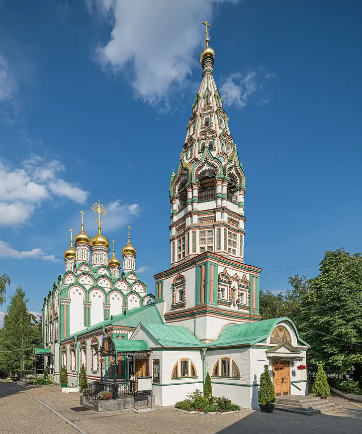

Фото: A.Savin, Free Art License · Wikimedia Commons
Храм XVII века · ЦАО
Церковь Николая Чудотворца в Хамовниках
Пряничный храм ткацкой слободы: зелёно-оранжевые наличники, кокошники и шатровая колокольня. Зимой на снегу — как открытка; рядом усадьба Толстого.
- ₽ · до 1 500 ₽ на человека
- Новое в каталоге
Позвать сюда: Церковь Николая Чудотворца в ХамовникахОткрыть в каталоге: Церковь Николая Чудотворца в ХамовникахМаршрут до места: Церковь Николая Чудотворца в Хамовниках
Адрес и детали
- Адрес
- ул. Льва Толстого, 2
Открыть на Яндекс Картах (в новой вкладке) - Метро
- м. Парк культуры
- Округ
- Центр (ЦАО)
- Цена
- до 1 500 ₽ на человека
- Проверено
- работает — проверили в ноябре 2026
Входит в подборки
Похожие рядом


Что ещё рядом


Как позвать
- Выбери план, место или событие — в карточке адрес, цены и маршрут в Яндекс Картах.
- Нажми «Позвать сюда» — соберётся приглашение-игра для свидания или голосование для компании.
- Отправь ссылку в любой мессенджер: тебе ответят, а компания отметит, куда и когда может. Бесплатно и без регистрации.